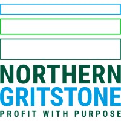

Integrated RNAbox™ prototype demonstrated
Continuous RNA synthesis, purification and lipid nanoparticle (LNP) formulation demonstrated in a compact, automated platform.
Projects, funding & support
RNA Forge advances defined RNAbox™ and service-development projects through innovation funding, strategic collaboration and investment aligned to practical technical milestones.
Development roadmap
From integrated prototype to GMP-ready deployment.
Continuous RNA synthesis, purification and lipid nanoparticle (LNP) formulation demonstrated in a compact, automated platform.
Process optimisation, analytics, soft sensors, recycling and digital control advanced across the platform.
Integrated manufacturing runs, comparability and stability studies demonstrate high-level platform performance.
GMP-aligned design, single-use components, supply-chain strategy and deployment documentation established.
Technology transfer, engineering verification and partner-facing deployment strategy prepared for commercial rollout.
Funders & programmes
RNAbox™ research programmes are shown separately from support provided directly to RNA Forge.
RNAbox™ research programmes
Research programme
Automated and digitalised RNA process-in-a-box research supporting outbreak-response RNA vaccine and therapeutic manufacturing development.
1 October 2023 – 31 March 2026
Research programme
Proof-of-concept research for RNAbox™ as a continuous RNA manufacturing platform for regional vaccine production.
1 October 2024 – 30 September 2027
RNA Forge funding & support
Spinout support
Spinout formation and translational support for RNA Forge.

Company-building programme
Life-sciences company-building support for RNA Forge.
July – December 2025
Enterprise support
Royal Academy of Engineering Enterprise Fellowship.
July 2026 – June 2027
Investors & collaborators
RNA Forge welcomes conversations with RNA therapeutic product developers, investors, technology providers, biomanufacturing organisations and research collaborators.
Potential discussions may cover service delivery, workflow evaluation, pilot deployment, technical collaboration and company development.
Contact RNA Forge